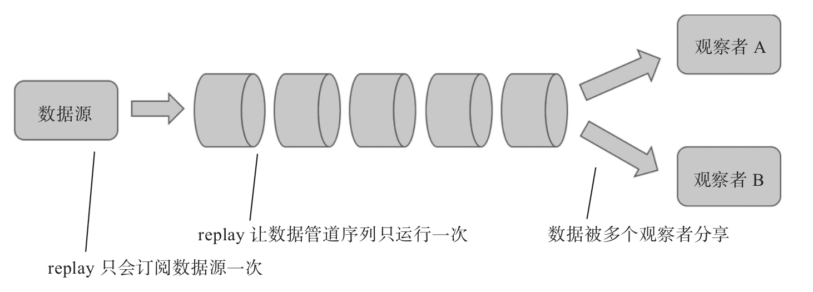
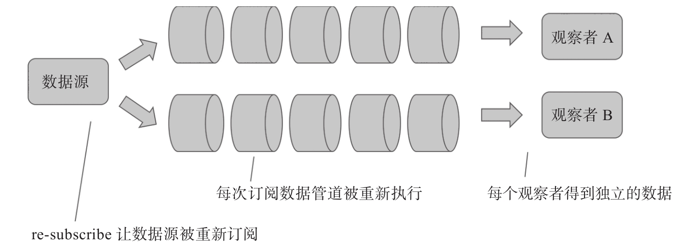

为了理解publishReplay和ReplaySubject，我们首先要理解replay（重播）这个概念。
我们在电视上看某个晚会的直播，电视里看到演员在台上卖力表演，这是play（播放），事后如果我们还想看这个晚会节目，那就看重播，看重播并不用演员在台上再表演一遍，只需要把直播的录像拿出来放就好了。
如果把电视节目制作比作Observable对象，那么产生最终的Observable对象也经历了一个数据管道，包括演员、摄影、直播支持等很多工作，才把节目图像传递到你家里的电视上，如果你要看重播，那么replay就是把Observable对象吐出的数据重新走一遍，而不是让数据管道重新产生一遍数据，如图10-4所示。
当然，如果你财大气粗，就是不想看录像，理论上，你也可以在节目演完之后，高薪要求演员重新为你表演一次，这样类比RxJS就相当于重新订阅（re-subscribe）一次数据源，让数据流管道重新运行一遍，如图10-5所示。
当然，re-subscribe付出的代价是很大的，这也就是在多播中，我们多是用replay，而不是re-subscribe的原因。

图10-4 replay示意图
ReplaySubject就像是录像，它不只是支持多播，而且还能够支持“录播”，能够把上游传下的数据存储下来，当新的Observer添加时，让Observer能够接收到订阅之前产生的数据。

图10-5 re-subscribe示意图
publishReplay的实现代码如下：
function publishReplay(
bufferSize = Number.POSITIVE_INFINITY,
windowTime = Number.POSITIVE_INFINITY
) {
return multicast.call(this, new ReplaySubject(bufferSize, windowTime));
}
可以看到，和publishLast一样，publishReplay也是直接调用multicast，只不过使用的Subject对象不同，publishReplay使用的是ReplaySubject这个类的对象。
publishReplay有两个参数，bufferSize和windowTime，通常只使用第一个参数bufferSize，代表Replay的缓冲区大小，如果不指定参数的话，bufferSize就会使用默认的最大数字大小，换句话说，Replay的缓冲区不设上限，上游有多少内容就缓存多少。
下面是使用publishReplay的代码示例：
import {Observable} from 'rxjs/Observable';
import 'rxjs/add/observable/interval';
import 'rxjs/add/operator/publishReplay';
import 'rxjs/add/operator/take';
import 'rxjs/add/operator/do';
const tick$ = Observable.interval(1000).take(3)
.do(x => console.log('source ', x));
const sharedTick$ = tick$.publishReplay().refCount();
sharedTick$.subscribe(value => console.log('observer 1: ' + value));
setTimeout(() => {
sharedTick$.subscribe(value => console.log('observer 2: ' + value));
}, 5000);
2号Observer在第5秒钟才被添加，如果使用之前的publish产生sharedTick$，2号Observer肯定是不能获得数据的；如果使用share产生sharedTick$，那么2号Observer可以获得数据，但是会重新subscribe一次上游的tick$对象。
在上面的代码中，我们在tick$的操作符管道中添加了do，输出流过管道的数据，以此来判断tick$是否被重复subscribe。
上面的代码执行结果如下：
source 0 observer 1: 0 source 1 observer 1: 1 source 2 observer 1: 2 observer 2: 0 observer 2: 1 observer 2: 2
可以看到，2号Observer依然获得了数据，却并没有重新subscribe上游的tick$，这是因为publishReplay缓存了上游数据流中的数据，就像是重播录像一样。
看起来publishReplay的功能十分强大，但是使用起来要谨慎，如果使用publishReplay不带参数，可能导致内存问题。
在上面的例子中，上游数据流只有有限的3个数据，publishReplay缓存起来没有问题，如果上游数据流吐出的数据很多，那么把这些数据全都缓存下来就显得很不现实。
所以，通常要给publishReplay一个合理的参数，限制缓存的大小。
修改上面代码中产生sharedTick$的代码如下：
const sharedTick$ = tick$.publishReplay(2).refCount();
给publishReplay增加参数2之后，代码运行结果就是这样：
source 0 observer 1: 0 source 1 observer 1: 1 source 2 observer 1: 2 observer 2: 1 observer 2: 2
2号Observer不会接收到数据0，因为bufferSize参数为2，只够容纳最后的两个数据，当1和2被publishReplay接收到的时候，之前接收到的0就被挤出缓冲区了。